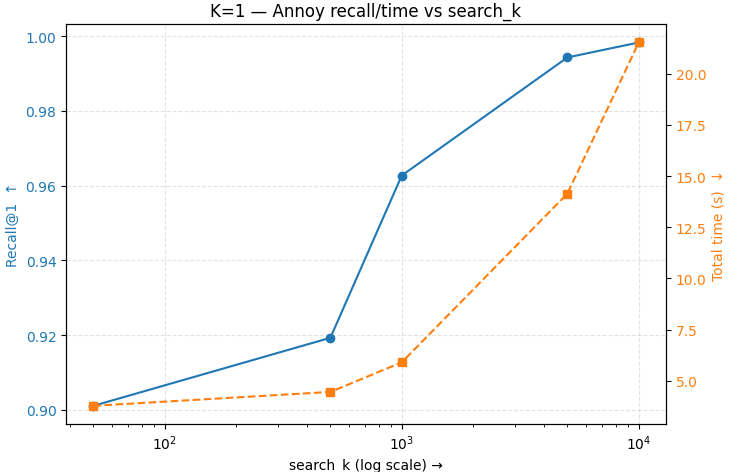
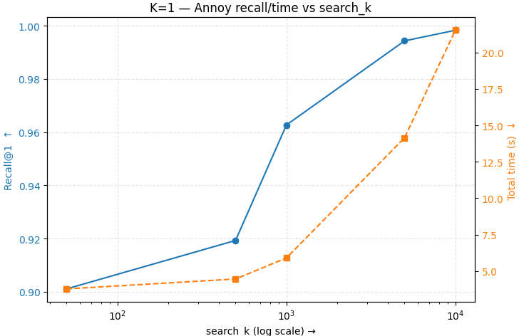

Weekly Updates
← Back to split index | Open original single-file view
Week 4 — Nov 06
Comparison Summary
-
The brute-force method initially appeared faster than the KD Tree and Annoy Tree.
This happened because KD Tree and Annoy process one query at a time,
while brute-force processes all queries in a single vectorized batch.
Scikit-learn performs all pairwise distances between
QandXusing optimized matrix operations. - When dimensionality (
D < 16), the KD Tree performs better than Annoy. - As dimensionality increases, KD Tree performance degrades (curse of dimensionality), while Annoy becomes more efficient.
brute_batched_s = time_batched(lambda: brute_nn.kneighbors(Q, return_distance=True))
# Single-query brute timing
def brute_single(q):
brute_nn.kneighbors(q.reshape(1, -1), return_distance=True)
This experiment included both batched and single-query brute-force timings.
- In high dimensions, Annoy uses random projections and does not rely on axis-aligned splits.
- When
D > 4096, even random projections become ineffective. - The uniform dataset ranged between 0 and 1.
The result for the uniform data is shown below:
Speedup Analysis
From the data, the following observations were made:
As dimension increases, KD Tree speedup approaches 1, meaning it performs similarly to brute-force.
For Annoy, speedup improves significantly as dimensionality and dataset size increase.
Effect of search_k on Annoy
Music Dataset Results
N_index = 59500,M_queries = 10500,D = 784
Brute_single_total_s: 1009.1376 KD_single_total_s: 629.7369 (Recall=1.0, Speedup=1.6) Annoy (search_k = 50): 3.7822s, Recall=0.9011, Speedup=266.81 Annoy (search_k = 500): 4.4602s, Recall=0.9193, Speedup=226.25 Annoy (search_k = 1000): 5.9033s, Recall=0.9627, Speedup=170.95 Annoy (search_k = 5000): 14.1414s, Recall=0.9943, Speedup=71.36 Annoy (search_k = 10000):21.5207s, Recall=0.9983, Speedup=46.89
The recall for uniform distribution was low, but for music and random data it was high.
Reason for Low Recall in Uniform Data
Uniform data → all distances are similar → nearest neighbors are hard to identify.
Coefficient of Variation (CV) results:
Uniform Distribution
mean CV = 0.085149 std = 0.006662 min = 0.065839 max = 0.104805
Music Data
mean CV = 0.144568 std = 0.025152 min = 0.053549 max = 0.215893
Higher CV indicates clustered structure → easier nearest neighbor retrieval → higher recall.
MNIST Results (1 Nearest Neighbor)
N_index: 59500 | M_queries: 10500 | D: 784
KD_tree Recall = 1.0 | Speedup = 1.6
Annoy Recall ~ 0.90–0.99 | Speedup = 266× to 46× (depending on search_k)
MNIST Results (15% Nearest Neighbors)
KD_tree Recall = 0.9955 | Speedup = 1.45 Annoy Recall improves with search_k (0.9193 → 0.9983) Speedup decreases as search_k increases
Dataset Summary Table
| Dataset | N | D | Property | Annoy R@1 | KD R@1 | Best Speedup |
|---|---|---|---|---|---|---|
| Uniform | 50k | 4096 | Unstructured, high-D | 0.0002 | 1.0 | <1× |
| Music | 60k | 784 | Structured embeddings | 0.99 | 1.0 | 266× |
| MNIST | 59.5k | 784 | Mid-D, structured | 0.99 | 1.0 | 266× |
Few Plots from the real life mnist data
 

Swan Sf data Partition
This data was only for the partition 1
Classes: ['B1', 'B2', 'B3', 'B4', 'B5', 'M1', 'M2', 'M3', 'M4', 'M5', 'M6', 'M7', 'M8', 'M9', 'X1', 'X2', 'X5', 'X6']
Index size: 4000 | Query size: 1000